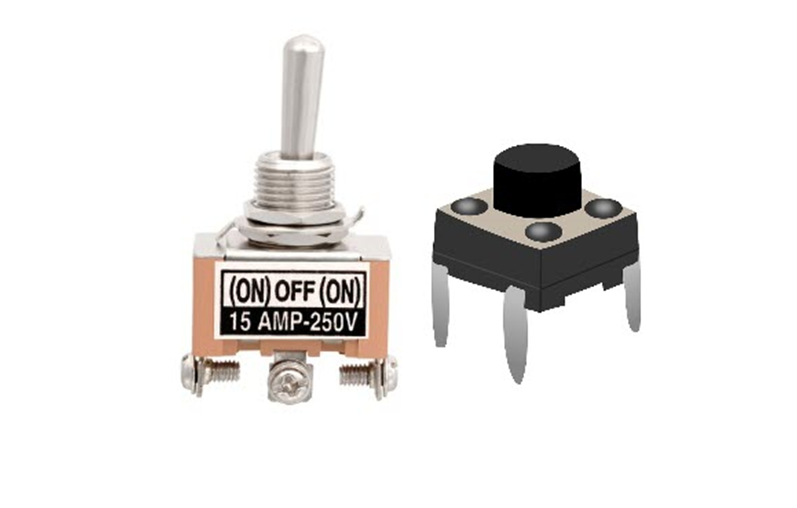

المفاتيح Switches :
هناك نوعان من المفاتيح، الأوّل وهو التقليديّ، وهو عبارة عن: “قواطع كهربائيّة تعمل على هيئة ON/OF”، والنوع الثاني هو: “سويتشات للداتا متعدّدة البورتات Ports”، وهذه بدورها يوجد منها نوعان، الأوّل وهو العاديّ غير القابل للبرمجة، والثاني يمكن برمجته بواسطة الحاسوب.
وظيفتها:
بالنسبة للقواطع الكهربائيّة ON/OF، فهي تُستخدم لفتح وغلق الدوائر الكهربائيّة في الأجهزة الإلكترونيّة، بينما النوع الثاني منها وهو سويتشات الداتا، فتُستخدم لربط أجهزة الشبكات المعلوماتيّة ببعضها البعض، فكلّ جهاز يكون له ip، أو عنوانٌ خاصٌّ به، فعند إرسال أيّ معلومةٍ إلى أيّ جهازٍ محدّد بعينه، تقوم هي بهذا الدور، أي بتوصيل ذلك الجهاز دون غيره.
